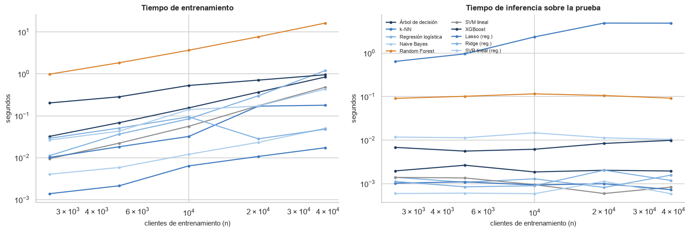
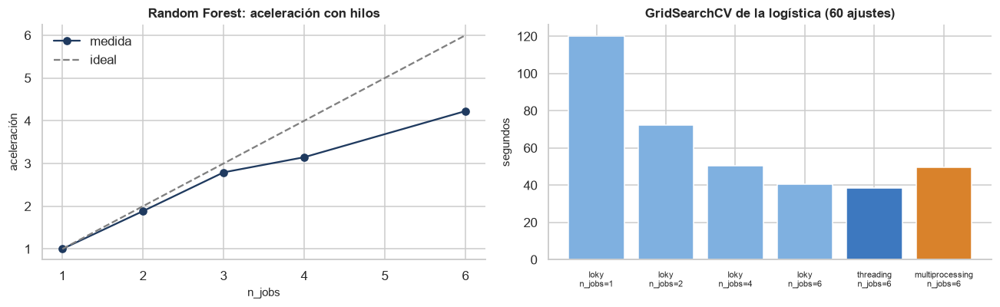
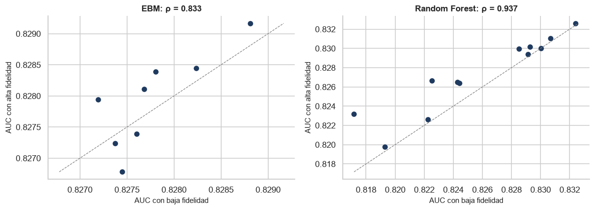

Optimización computacional#
La guía (§4) pide analizar la complejidad de entrenamiento e inferencia de cada modelo y
contrastarla con tiempos medidos, probar variantes más eficientes de cada uno, estudiar la
paralelización, perfilar el código y resumirlo todo en una tabla de versión estándar frente a
versión optimizada. Los experimentos están en computo.py. Se ejecutan con los hiperparámetros
finales de la mejor combinación de cada modelo, sobre el entrenamiento completo, y miden con
tiempos de reloj la mediana de varias repeticiones. Para que esos tiempos sean válidos, el guion
espera a que el equipo no esté corriendo ningún otro experimento.
import json
import sys
import warnings
from pathlib import Path
RAIZ = Path.cwd().parent
sys.path.insert(0, str(RAIZ))
warnings.filterwarnings('ignore')
import matplotlib.pyplot as plt
import numpy as np
import pandas as pd
from IPython.display import Markdown, display
from scipy import stats
from src import graficos, modelos
from src.analisis import NOMBRES_MODELO
from src.formato import dec, ent, enumerar, pct
graficos.estilo()
pd.set_option('display.float_format', lambda v: f'{v:,.4f}')
CARPETA = RAIZ / 'resultados' / 'computo'
def leer(nombre):
ruta = CARPETA / f'{nombre}.csv'
if not ruta.exists():
display(Markdown(f'*Resultado pendiente: `{nombre}` todavía no se ha medido (lo produce `computo.py`).*'))
return None
return pd.read_csv(ruta)
if (CARPETA / 'equipo.json').exists():
equipo = json.loads((CARPETA / 'equipo.json').read_text(encoding='utf-8'))
display(pd.Series(equipo).to_frame('equipo de medición'))
| equipo de medición | |
|---|---|
| procesador | AMD64 Family 23 Model 113 Stepping 0, Authenti... |
| nucleos_logicos | 6 |
| nucleos_fisicos | 6 |
| memoria_gb | 15.9000 |
| sistema | Windows-11-10.0.26200-SP0 |
| python | 3.13.3 |
| gpu | NVIDIA GeForce RTX 3050, 6144 MiB |
1. Complejidad teórica frente a tiempos medidos#
Si el tiempo de entrenamiento crece como \(O(n^a)\), en escala log-log es una recta de pendiente \(a\). Se entrena cada modelo con 2.500 a 38.978 clientes y se estima la pendiente con los tamaños mayores, donde los costes fijos ya no dominan. La inferencia se mide siempre sobre los 9.745 clientes de prueba.
esc = leer('escalamiento')
if esc is not None:
teoria = {('clasificacion', m): s.complejidad for m, s in modelos.catalogo('clasificacion').items()}
teoria |= {('regresion', m): s.complejidad for m, s in modelos.catalogo('regresion').items()}
fig, ax = plt.subplots(1, 2, figsize=(14, 4.8))
filas = []
for (tarea, m), g in esc.groupby(['tarea', 'modelo']):
g = g.sort_values('n')
etiqueta = f'{NOMBRES_MODELO[m]}{" (reg.)" if tarea == "regresion" else ""}'
ax[0].plot(g['n'], g['entrenamiento_s'], marker='o', ms=3, label=etiqueta)
ax[1].plot(g['n'], g['inferencia_s'], marker='o', ms=3, label=etiqueta)
grandes = g[g['n'] >= g['n'].max() / 8]
pendiente = np.polyfit(np.log(grandes['n']), np.log(grandes['entrenamiento_s']), 1)[0] if len(grandes) >= 2 else np.nan
pend_inf = np.polyfit(np.log(grandes['n']), np.log(grandes['inferencia_s']), 1)[0] if len(grandes) >= 2 else np.nan
ultimo = g.iloc[-1]
filas.append({'tarea': tarea, 'modelo': NOMBRES_MODELO[m],
'complejidad de entrenamiento': teoria[(tarea, m)].get('entrenamiento', ''),
'pendiente medida (entrenamiento)': pendiente,
'complejidad de inferencia': teoria[(tarea, m)].get('inferencia', ''),
'pendiente medida (inferencia frente al n de entrenamiento)': pend_inf,
'entrenamiento con todo (s)': ultimo['entrenamiento_s'],
'inferencia de la prueba (s)': ultimo['inferencia_s'],
'memoria pico (MB)': ultimo.get('memoria_mb'), 'tamaño del modelo (MB)': ultimo.get('tamano_modelo_mb')})
for a, t in zip(ax, ('entrenamiento', 'inferencia sobre la prueba')):
a.set_xscale('log')
a.set_yscale('log')
a.set_xlabel('clientes de entrenamiento (n)')
a.set_ylabel('segundos')
a.set_title(f'Tiempo de {t}')
ax[1].legend(frameon=False, fontsize=7, ncol=2)
plt.tight_layout()
plt.show()
complejidad = pd.DataFrame(filas).set_index(['tarea', 'modelo'])
display(complejidad)

| complejidad de entrenamiento | pendiente medida (entrenamiento) | complejidad de inferencia | pendiente medida (inferencia frente al n de entrenamiento) | entrenamiento con todo (s) | inferencia de la prueba (s) | memoria pico (MB) | tamaño del modelo (MB) | ||
|---|---|---|---|---|---|---|---|---|---|
| tarea | modelo | ||||||||
| clasificacion | Árbol de decisión | O(n·p·log n) | 1.2240 | O(d) por consulta | -0.1215 | 0.8428 | 0.0020 | 11.6016 | 0.0051 |
| k-NN | O(1) fuerza bruta; O(n·p·log n) KD/Ball Tree | 0.9910 | O(n·p) por consulta en fuerza bruta; O(p·log n... | 0.8203 | 0.0173 | 4.8736 | 0.0000 | 23.4936 | |
| Regresión logística | O(k·n·p) (liblinear, k iteraciones) | 1.7095 | O(p) | 0.0970 | 1.1986 | 0.0016 | 60.6289 | 0.0013 | |
| Naive Bayes | O(n·p) | 1.0355 | O(p·clases) por consulta | -0.0766 | 0.0503 | 0.0104 | 23.7031 | 0.0029 | |
| Random Forest | O(T·n·p·log n) | 1.0616 | O(T·d) por consulta | -0.0553 | 16.2776 | 0.0923 | 67.7031 | 43.9158 | |
| SVM lineal | O(k·n·p) lineal; O(n²·p)–O(n³) con núcleo | 1.5078 | O(p) lineal; O(s·p) con núcleo | -0.2828 | 0.4810 | 0.0008 | 32.4453 | 0.0012 | |
| XGBoost | O(T·d·(n·p + bins·p)) con hist; O(T·d·n·p·log ... | 0.5726 | O(T·d) por consulta | 0.2936 | 0.9524 | 0.0099 | 13.2969 | 0.5500 | |
| regresion | Lasso | O(k·n·p) descenso por coordenadas | 1.2435 | O(p) | -0.1708 | 0.1790 | 0.0007 | 23.1992 | 0.0011 |
| Ridge | O(n·p² + p³) cholesky; O(k·n·p) SAGA | -0.2050 | O(p) | 0.2702 | 0.0479 | 0.0012 | 23.2031 | 0.0010 | |
| SVR lineal | O(k·n·p) lineal; O(n²·p)–O(n³) con núcleo | 1.0386 | O(p) lineal; O(s·p) con núcleo | 0.0851 | 0.4347 | 0.0006 | 28.6055 | 0.0011 |
if esc is not None:
c = complejidad.xs('clasificacion')
pend = complejidad['pendiente medida (entrenamiento)'].droplevel(0)
pend = pend[~pend.index.duplicated()]
casi_lineal = pend[(pend > 0.85) & (pend < 1.3)]
rapido = pend[pend >= 1.3]
lento = pend[pend <= 0.85]
inf = complejidad['inferencia de la prueba (s)']
ent_ = complejidad['entrenamiento con todo (s)']
mem = complejidad['memoria pico (MB)']
tam = complejidad['tamaño del modelo (MB)']
lista = lambda s: enumerar(f"{m} ({dec(v, 2)})" for m, v in s.sort_values().items())
display(Markdown(f"""
Crecen de forma casi lineal en n, como predicen O(n·p) y O(n·p·log n), {lista(casi_lineal)}. Crecen más
deprisa {lista(rapido)}: resuelven problemas iterativos (liblinear) que necesitan más iteraciones
cuanto más datos ven, de modo que el coste real es O(k·n·p) con un k que
también crece. Crecen más despacio {lista(lento)}: Ridge resuelve un sistema de 78 × 78 (el término p³ es
despreciable) y tarda milisegundos, así que la medición la dominan costes fijos; XGBoost con `hist`
reparte la construcción de histogramas entre 6 hilos y amortiza mejor el coste fijo de cada árbol cuando
hay más filas. La inferencia es casi instantánea en todos salvo k-NN, que «entrena» solo guardando los datos
y traslada el coste a la consulta: tarda {dec(inf.max(), 2)} s en puntuar la prueba, con una
pendiente de {dec(c.loc['k-NN', 'pendiente medida (inferencia frente al n de entrenamiento)'], 2)} frente al número de clientes guardados, como
corresponde a O(n·m·p). El más caro de entrenar es {ent_.idxmax()[1]} ({dec(ent_.max(), 1)} s){', que es también el más pesado en memoria (' + dec(mem.max(), 0) + ' MB de pico) y en disco (' + dec(tam.max(), 0) + ' MB serializado), por sus 300 árboles profundos' if mem.idxmax() == ent_.idxmax() == tam.idxmax() else ''}.
"""))
Crecen de forma casi lineal en n, como predicen O(n·p) y O(n·p·log n), k-NN (0,99), Naive Bayes (1,04), SVR lineal (1,04), Random Forest (1,06), Árbol de decisión (1,22) y Lasso (1,24). Crecen más
deprisa SVM lineal (1,51) y Regresión logística (1,71): resuelven problemas iterativos (liblinear) que necesitan más iteraciones
cuanto más datos ven, de modo que el coste real es O(k·n·p) con un k que
también crece. Crecen más despacio Ridge (−0,21) y XGBoost (0,57): Ridge resuelve un sistema de 78 × 78 (el término p³ es
despreciable) y tarda milisegundos, así que la medición la dominan costes fijos; XGBoost con hist
reparte la construcción de histogramas entre 6 hilos y amortiza mejor el coste fijo de cada árbol cuando
hay más filas. La inferencia es casi instantánea en todos salvo k-NN, que «entrena» solo guardando los datos
y traslada el coste a la consulta: tarda 4,87 s en puntuar la prueba, con una
pendiente de 0,82 frente al número de clientes guardados, como
corresponde a O(n·m·p). El más caro de entrenar es Random Forest (16,3 s), que es también el más pesado en memoria (68 MB de pico) y en disco (44 MB serializado), por sus 300 árboles profundos.
2. k-NN: árboles de búsqueda y FAISS#
knn = leer('knn')
if knn is not None:
display(knn.set_index(['dimension', 'metodo']).drop(columns=['k', 'pesos', 'p']))
k78 = knn[knn['dimension'] == '78 variables'].set_index('metodo')
k4 = knn[knn['dimension'] == '4 variables con señal'].set_index('metodo')
base = 'scikit-learn brute'
hnsw = [m for m in k78.index if 'HNSW' in m][0]
display(Markdown(f"""
Con {knn['k'].iloc[0]} vecinos y distancia {'Manhattan' if knn['p'].iloc[0] == 1 else 'euclídea'} (los hiperparámetros finales):
- En las **78 dimensiones** del problema, KD-Tree y Ball Tree son {dec(k78.loc['scikit-learn kd_tree', 'consulta_s'] / k78.loc[base, 'consulta_s'], 1)} y
{dec(k78.loc['scikit-learn ball_tree', 'consulta_s'] / k78.loc[base, 'consulta_s'], 1)} veces **más lentos** que la fuerza bruta
({dec(k78.loc[base, 'consulta_s'], 2)} s). Es la maldición de la dimensión: con tantas variables, un árbol casi
nunca puede descartar regiones enteras y acaba visitando casi todos los puntos, con el sobrecoste de recorrerse.
- FAISS **tampoco acelera** en este caso: su índice exacto tarda {dec(k78.loc['FAISS IndexFlat (exacto)', 'consulta_s'], 2)} s,
porque sus rutinas rápidas (multiplicación de matrices con BLAS) son para la distancia euclídea y el producto
interno, y la Manhattan cae en una implementación genérica. El índice aproximado HNSW obtiene
prácticamente el mismo AUC ({dec(k78.loc[hnsw, 'auc'], 4)} frente a {dec(k78.loc[base, 'auc'], 4)}) pero tampoco gana tiempo
({dec(k78.loc[hnsw, 'consulta_s'], 2)} s): para devolver {knn['k'].iloc[0]} vecinos tiene que explorar al menos otros tantos
candidatos por consulta, y su ventaja, que es visitar muy pocos, desaparece.
- Con las **4 variables con señal** el orden se invierte: KD-Tree es el más rápido
({dec(k4.loc['scikit-learn kd_tree', 'consulta_s'], 2)} s frente a {dec(k4.loc[base, 'consulta_s'], 2)} s de la fuerza bruta), como predice su
coste de O(log n) por consulta en baja dimensión, y el AUC sube a {dec(k4.loc[base, 'auc'], 4)}: quitar las 74 columnas
de ruido mejora a la vez la velocidad y la calidad de k-NN, que es lo que la Entrega 2 no hizo.
"""))
ke = leer('knn_euclidea')
if ke is not None:
display(ke.set_index(['k', 'metodo']))
filas_e = []
for k_, g in ke.groupby('k'):
g = g.set_index('metodo')
h = [m for m in g.index if 'HNSW' in m][0]
t_sk, t_fx, t_h = g.loc['scikit-learn brute', 'consulta_s'], g.loc['FAISS IndexFlatL2 (exacto)', 'consulta_s'], g.loc[h, 'consulta_s']
exacto = (f"el índice exacto de FAISS tarda {dec(t_fx, 2)} s frente a {dec(t_sk, 2)} s de scikit-learn"
+ (' (algo más: los dos usan multiplicación de matrices con BLAS)' if t_fx >= t_sk else f' ({dec(t_sk / t_fx, 1)} veces más rápido)'))
aprox = (f"HNSW consulta en {dec(t_h, 2)} s, {dec(t_sk / t_h, 1)} veces más rápido que scikit-learn, recuperando el {pct(g.loc[h, 'exhaustividad'], 1)} de los vecinos exactos"
if t_h < 0.9 * t_sk else f"HNSW ya no gana tiempo ({dec(t_h, 2)} s) aunque recupera el {pct(g.loc[h, 'exhaustividad'], 1)} de los vecinos exactos")
filas_e.append(f"con k = {k_}, {exacto}, y {aprox}")
display(Markdown(f"""
**Distancia euclídea.** Se repitió la comparación con la distancia euclídea, para la que FAISS está
optimizado: {'; '.join(filas_e)}. La búsqueda exacta no mejora a scikit-learn, que ya es eficiente en
este tamaño; la aproximada (HNSW) sí acelera cuando se piden pocos vecinos, a cambio de perder una
fracción mínima de ellos, y pierde su ventaja a medida que crece k, porque tiene que explorar al menos k
candidatos por consulta. Con el k-NN óptimo de este problema (600 vecinos y distancia Manhattan), la
fuerza bruta de scikit-learn es la mejor opción, y la optimización que de verdad compensa es reducir las
variables.
"""))
| exacto | construccion_s | consulta_s | auc | indice_mb | ||
|---|---|---|---|---|---|---|
| dimension | metodo | |||||
| 78 variables | scikit-learn brute | True | 0.0033 | 8.0370 | 0.7874 | 11.8958 |
| scikit-learn kd_tree | True | 0.6638 | 24.0691 | 0.7874 | 37.8880 | |
| scikit-learn ball_tree | True | 0.4045 | 24.2643 | 0.7874 | 36.6699 | |
| FAISS IndexFlat (exacto) | True | 0.0106 | 11.9519 | 0.7874 | 11.5978 | |
| FAISS HNSW (aproximado, M=32) | False | 2.6646 | 11.4479 | 0.7873 | 21.7169 | |
| 4 variables con señal | scikit-learn brute | True | 0.0019 | 2.5011 | 0.8212 | 0.8928 |
| scikit-learn kd_tree | True | 0.0407 | 1.8495 | 0.8212 | 2.5676 | |
| scikit-learn ball_tree | True | 0.0337 | 3.0975 | 0.8212 | 2.5052 | |
| FAISS IndexFlat (exacto) | True | 0.0001 | 1.9340 | 0.8212 | 0.5948 | |
| FAISS HNSW (aproximado, M=32) | False | 0.9234 | 8.3182 | 0.8212 | 10.7139 |
Con 600 vecinos y distancia Manhattan (los hiperparámetros finales):
En las 78 dimensiones del problema, KD-Tree y Ball Tree son 3,0 y 3,0 veces más lentos que la fuerza bruta (8,04 s). Es la maldición de la dimensión: con tantas variables, un árbol casi nunca puede descartar regiones enteras y acaba visitando casi todos los puntos, con el sobrecoste de recorrerse.
FAISS tampoco acelera en este caso: su índice exacto tarda 11,95 s, porque sus rutinas rápidas (multiplicación de matrices con BLAS) son para la distancia euclídea y el producto interno, y la Manhattan cae en una implementación genérica. El índice aproximado HNSW obtiene prácticamente el mismo AUC (0,7873 frente a 0,7874) pero tampoco gana tiempo (11,45 s): para devolver 600 vecinos tiene que explorar al menos otros tantos candidatos por consulta, y su ventaja, que es visitar muy pocos, desaparece.
Con las 4 variables con señal el orden se invierte: KD-Tree es el más rápido (1,85 s frente a 2,50 s de la fuerza bruta), como predice su coste de O(log n) por consulta en baja dimensión, y el AUC sube a 0,8212: quitar las 74 columnas de ruido mejora a la vez la velocidad y la calidad de k-NN, que es lo que la Entrega 2 no hizo.
| construccion_s | consulta_s | exhaustividad | ||
|---|---|---|---|---|
| k | metodo | |||
| 10 | scikit-learn brute | 0.0000 | 0.6467 | 1.0000 |
| FAISS IndexFlatL2 (exacto) | 0.0126 | 0.7443 | 1.0000 | |
| FAISS HNSW (aproximado, M=32) | 1.0144 | 0.2362 | 0.9943 | |
| 100 | scikit-learn brute | 0.0000 | 0.6894 | 1.0000 |
| FAISS IndexFlatL2 (exacto) | 0.0035 | 0.9262 | 1.0000 | |
| FAISS HNSW (aproximado, M=32) | 0.7802 | 0.7184 | 0.9972 |
Distancia euclídea. Se repitió la comparación con la distancia euclídea, para la que FAISS está optimizado: con k = 10, el índice exacto de FAISS tarda 0,74 s frente a 0,65 s de scikit-learn (algo más: los dos usan multiplicación de matrices con BLAS), y HNSW consulta en 0,24 s, 2,7 veces más rápido que scikit-learn, recuperando el 99,4 % de los vecinos exactos; con k = 100, el índice exacto de FAISS tarda 0,93 s frente a 0,69 s de scikit-learn (algo más: los dos usan multiplicación de matrices con BLAS), y HNSW ya no gana tiempo (0,72 s) aunque recupera el 99,7 % de los vecinos exactos. La búsqueda exacta no mejora a scikit-learn, que ya es eficiente en este tamaño; la aproximada (HNSW) sí acelera cuando se piden pocos vecinos, a cambio de perder una fracción mínima de ellos, y pierde su ventaja a medida que crece k, porque tiene que explorar al menos k candidatos por consulta. Con el k-NN óptimo de este problema (600 vecinos y distancia Manhattan), la fuerza bruta de scikit-learn es la mejor opción, y la optimización que de verdad compensa es reducir las variables.
3. Solucionadores de los modelos lineales#
lin = leer('lineales')
if lin is not None:
display(lin.set_index(['modelo', 'solucionador']))
r = lin[lin['modelo'] == 'Ridge'].set_index('solucionador')
l = lin[lin['modelo'] == 'Lasso'].set_index('solucionador')
g = lin[lin['modelo'] == 'Logística L1'].set_index('solucionador')
display(Markdown(f"""
**Ridge.** El problema es pequeño en columnas (p = 78), así que los métodos directos son los más rápidos:
el más veloz fue `{r['entrenamiento_s'].idxmin()}` ({dec(r['entrenamiento_s'].min(), 3)} s), y SAGA, pensado para n y p muy grandes,
tardó {dec(r.loc['saga', 'entrenamiento_s'], 3)} s ({r.loc['saga', 'iteraciones']:.0f} iteraciones) para el mismo RMSE. **Lasso.** El
descenso por coordenadas ({dec(l.loc['descenso por coordenadas', 'entrenamiento_s'], 3)} s) supera al SGD con penalización L1
({dec(l.loc['SGD con penalización L1', 'entrenamiento_s'], 3)} s), que además converge a un RMSE algo peor. **Logística L1.**
liblinear ({dec(g.loc['liblinear', 'entrenamiento_s'], 3)} s) frente a SAGA ({dec(g.loc['saga', 'entrenamiento_s'], 3)} s), con el mismo AUC. Con
39.000 filas y 78 columnas, los solucionadores estocásticos no compensan: su ventaja aparece cuando los
datos no caben en memoria o p es muy grande.
"""))
| entrenamiento_s | iteraciones | metrica | valor | coeficientes_no_nulos | ||
|---|---|---|---|---|---|---|
| modelo | solucionador | |||||
| Ridge | cholesky | 0.0791 | NaN | rmse | 0.0617 | NaN |
| svd | 0.4226 | NaN | rmse | 0.0617 | NaN | |
| lsqr | 0.2492 | 37.0000 | rmse | 0.0617 | NaN | |
| sparse_cg | 0.2600 | NaN | rmse | 0.0617 | NaN | |
| sag | 8.3779 | 305.0000 | rmse | 0.0617 | NaN | |
| saga | 15.0818 | 567.0000 | rmse | 0.0617 | NaN | |
| Lasso | descenso por coordenadas | 0.2187 | 28.0000 | rmse | 0.0617 | 39.0000 |
| SGD con penalización L1 | 0.8792 | 35.0000 | rmse | 0.0671 | 25.0000 | |
| Logística L1 | liblinear | 1.2672 | 21.0000 | auc | 0.7710 | 47.0000 |
| saga | 19.3958 | 577.0000 | auc | 0.7710 | 47.0000 |
Ridge. El problema es pequeño en columnas (p = 78), así que los métodos directos son los más rápidos:
el más veloz fue cholesky (0,079 s), y SAGA, pensado para n y p muy grandes,
tardó 15,082 s (567 iteraciones) para el mismo RMSE. Lasso. El
descenso por coordenadas (0,219 s) supera al SGD con penalización L1
(0,879 s), que además converge a un RMSE algo peor. Logística L1.
liblinear (1,267 s) frente a SAGA (19,396 s), con el mismo AUC. Con
39.000 filas y 78 columnas, los solucionadores estocásticos no compensan: su ventaja aparece cuando los
datos no caben en memoria o p es muy grande.
4. Naive Bayes con partial_fit#
nb = leer('naive_bayes')
if nb is not None:
display(nb.set_index('modo'))
nbi = nb.set_index('modo')
display(Markdown(f"""
`partial_fit` permite entrenar por lotes sin cargar todo en memoria: las medias y varianzas por clase se
actualizan de forma exacta, y la memoria adicional del ajuste baja de {dec(nbi.iloc[0]['memoria_mb'], 1)} MB con el
ajuste completo a {dec(nbi.iloc[-1]['memoria_mb'], 2)} MB con lotes de 1.000. Las probabilidades, en cambio, no son idénticas:
el suavizado de varianza se calcula con la varianza máxima del **primer** lote, y la diferencia máxima con el
ajuste completo crece al achicar los lotes ({enumerar(f"{dec(v, 3)} con {m.split('lotes de ')[-1]}" for m, v in nbi['max_dif_probabilidad'].iloc[1:].items())}),
aunque el AUC apenas cambia (de {dec(nbi['auc'].min(), 4)} a {dec(nbi['auc'].max(), 4)}). En este conjunto, que cabe en memoria, no hace
falta; la técnica importa para flujos de datos o tablas mayores que la memoria.
"""))
| entrenamiento_s | memoria_mb | auc | max_dif_probabilidad | |
|---|---|---|---|---|
| modo | ||||
| fit completo | 0.0462 | 32.9609 | 0.6662 | 0.0000 |
| partial_fit, lotes de 20000 | 0.0424 | 11.6758 | 0.6666 | 0.0377 |
| partial_fit, lotes de 5000 | 0.0384 | 4.5078 | 0.6684 | 0.2677 |
| partial_fit, lotes de 1000 | 0.0480 | 0.0117 | 0.6703 | 0.4993 |
partial_fit permite entrenar por lotes sin cargar todo en memoria: las medias y varianzas por clase se
actualizan de forma exacta, y la memoria adicional del ajuste baja de 33,0 MB con el
ajuste completo a 0,01 MB con lotes de 1.000. Las probabilidades, en cambio, no son idénticas:
el suavizado de varianza se calcula con la varianza máxima del primer lote, y la diferencia máxima con el
ajuste completo crece al achicar los lotes (0,038 con 20000, 0,268 con 5000 y 0,499 con 1000),
aunque el AUC apenas cambia (de 0,6662 a 0,6703). En este conjunto, que cabe en memoria, no hace
falta; la técnica importa para flujos de datos o tablas mayores que la memoria.
5. XGBoost: método de construcción, GPU y early stopping#
xg = leer('xgboost')
if xg is not None:
display(xg.set_index(['experimento', 'variante']))
m = xg[xg['experimento'] == 'método y dispositivo'].set_index('variante')
t_exact = m.loc[m.index.str.startswith('exact'), 'entrenamiento_s'].iloc[0]
t_hist = m.loc['hist · cpu · todos los hilos', 'entrenamiento_s']
t_gpu = m.loc[m.index.str.contains('cuda'), 'entrenamiento_s'].iloc[0]
t_1 = m.loc['hist · cpu · 1 hilo', 'entrenamiento_s']
es = xg[xg['experimento'] == 'early stopping'].set_index('variante')
display(Markdown(f"""
Con los hiperparámetros finales, `hist` (agrupa cada variable en 256 intervalos y busca cortes sobre
histogramas) entrena en {dec(t_hist, 2)} s frente a {dec(t_exact, 2)} s de `exact` (que ordena los valores en cada
nodo): {dec(t_exact / t_hist, 1)} veces más rápido con el mismo AUC. Los 6 hilos aceleran {dec(t_1 / t_hist, 1)} veces frente a uno.
En la GPU RTX 3050 el entrenamiento tarda {dec(t_gpu, 2)} s{(', algo más que en la CPU: la GPU no acelera' if t_gpu >= t_hist else ': ' + dec(t_hist / t_gpu, 1) + ' veces más rápido que en la CPU, aunque')} con 39.000 filas y
árboles pequeños, porque el trabajo por árbol es poco y pesan el coste de copiar los datos a la GPU y de lanzar
sus núcleos. La GPU gana cuando el conjunto es mucho mayor o los árboles más profundos.
Con *early stopping* (validación del 10 % del entrenamiento, paciencia de 50 rondas, tasa 0,05) el
modelo se detiene en {es.iloc[1]['arboles']:.0f} árboles en lugar de 500, en {dec(es.iloc[1]['entrenamiento_s'], 2)} s frente a
{dec(es.iloc[0]['entrenamiento_s'], 2)} s, con un AUC de prueba de {dec(es.iloc[1]['auc'], 4)} frente a {dec(es.iloc[0]['auc'], 4)}: entrenar de más
no solo cuesta tiempo, también sobreajusta.
"""))
| arboles | entrenamiento_s | inferencia_s | auc | ||
|---|---|---|---|---|---|
| experimento | variante | ||||
| método y dispositivo | exact · cpu · todos los hilos | 145 | 5.7574 | 0.0116 | 0.8295 |
| approx · cpu · todos los hilos | 145 | 5.6439 | 0.0079 | 0.8283 | |
| hist · cpu · todos los hilos | 145 | 0.8245 | 0.0064 | 0.8280 | |
| hist · cpu · 1 hilo | 145 | 2.2828 | 0.0276 | 0.8280 | |
| hist · cuda · todos los hilos | 145 | 0.8630 | 0.0064 | 0.8280 | |
| early stopping | 500 árboles fijos, tasa 0,05 | 500 | 2.7219 | NaN | 0.8263 |
| hasta 5.000 árboles con early stopping (50 rondas) | 153 | 1.4115 | NaN | 0.8289 |
Con los hiperparámetros finales, hist (agrupa cada variable en 256 intervalos y busca cortes sobre
histogramas) entrena en 0,82 s frente a 5,76 s de exact (que ordena los valores en cada
nodo): 7,0 veces más rápido con el mismo AUC. Los 6 hilos aceleran 2,8 veces frente a uno.
En la GPU RTX 3050 el entrenamiento tarda 0,86 s, algo más que en la CPU: la GPU no acelera con 39.000 filas y
árboles pequeños, porque el trabajo por árbol es poco y pesan el coste de copiar los datos a la GPU y de lanzar
sus núcleos. La GPU gana cuando el conjunto es mucho mayor o los árboles más profundos.
Con early stopping (validación del 10 % del entrenamiento, paciencia de 50 rondas, tasa 0,05) el modelo se detiene en 153 árboles en lugar de 500, en 1,41 s frente a 2,72 s, con un AUC de prueba de 0,8289 frente a 0,8263: entrenar de más no solo cuesta tiempo, también sobreajusta.
6. SVM: núcleo RBF frente a modelos lineales#
svm = leer('svm')
if svm is not None:
display(svm.set_index(['modelo', 'n']))
rbf = svm[svm['modelo'] == 'SVC núcleo RBF']
a, b = np.polyfit(np.log(rbf['n']), np.log(rbf['entrenamiento_s']), 1)
n_total = svm['n'].max()
extrapolado = float(np.exp(b) * n_total ** a)
lineal = svm[(svm['modelo'] == 'LinearSVC (primal, L2)') & (svm['n'] == n_total)].iloc[0]
lineal_8k = svm[(svm['modelo'] == 'LinearSVC (primal, L2)') & (svm['n'] == rbf['n'].max())].iloc[0]
rbf_max = rbf.sort_values('n').iloc[-1]
horas_corrida = extrapolado * 540 / 6 / 3600
from src import analisis
t_svm = analisis.cargar_tabla().query("modelo == 'svm' and estado == 'ok'")['tiempo_total_s'].sum() / 3600
display(Markdown(f"""
El SVC con núcleo RBF crece con pendiente {dec(a, 2)} en n (la teoría da entre 2 y 3 para el solucionador SMO).
Extrapolando, entrenarlo con los {ent(n_total)} clientes llevaría unos **{dec(extrapolado, 0)} s** por ajuste, frente a
{dec(lineal['entrenamiento_s'], 2)} s de LinearSVC: {dec(extrapolado / lineal['entrenamiento_s'], 0)} veces más. Una corrida anidada hace unos 540 ajustes, así
que con el núcleo cada corrida tardaría {dec(horas_corrida, 1)} horas aun repartida en los 6 núcleos, y las 16 corridas del
SVM, que con LinearSVC tardaron {dec(t_svm, 1)} horas en total, pasarían a unas {dec(16 * horas_corrida, 0)} horas. La inferencia también crece: el SVC guarda {ent(rbf_max['vectores_soporte'])} vectores de soporte y
compara cada cliente nuevo con todos ellos ({dec(rbf_max['inferencia_s'], 2)} s para la prueba, frente a milisegundos del lineal).
Y el núcleo apenas mejora la métrica: con {ent(rbf_max['n'])} clientes logra {dec(rbf_max['auc'], 4)} de AUC, frente a {dec(lineal_8k['auc'], 4)}
del lineal con los mismos clientes y {dec(lineal['auc'], 4)} con todos. Por eso el SVM del pipeline es lineal.
"""))
| entrenamiento_s | inferencia_s | auc | vectores_soporte | ||
|---|---|---|---|---|---|
| modelo | n | ||||
| LinearSVC (primal, L2) | 1000 | 0.0031 | 0.0013 | 0.7320 | NaN |
| SGD con pérdida hinge | 1000 | 0.0043 | 0.0013 | 0.7073 | NaN |
| SVC núcleo RBF | 1000 | 0.0497 | 0.6569 | 0.6997 | 698.0000 |
| LinearSVC (primal, L2) | 2000 | 0.0074 | 0.0018 | 0.7517 | NaN |
| SGD con pérdida hinge | 2000 | 0.0107 | 0.0014 | 0.7293 | NaN |
| SVC núcleo RBF | 2000 | 0.1526 | 1.2281 | 0.7237 | 1,319.0000 |
| LinearSVC (primal, L2) | 4000 | 0.0175 | 0.0018 | 0.7602 | NaN |
| SGD con pérdida hinge | 4000 | 0.0186 | 0.0017 | 0.7334 | NaN |
| SVC núcleo RBF | 4000 | 0.5860 | 2.5169 | 0.7504 | 2,440.0000 |
| LinearSVC (primal, L2) | 8000 | 0.0401 | 0.0015 | 0.7636 | NaN |
| SGD con pérdida hinge | 8000 | 0.0408 | 0.0015 | 0.7243 | NaN |
| SVC núcleo RBF | 8000 | 2.3801 | 4.3965 | 0.7646 | 4,676.0000 |
| LinearSVC (primal, L2) | 38978 | 0.6123 | 0.0015 | 0.7697 | NaN |
| SGD con pérdida hinge | 38978 | 0.1796 | 0.0023 | 0.7446 | NaN |
El SVC con núcleo RBF crece con pendiente 1,87 en n (la teoría da entre 2 y 3 para el solucionador SMO). Extrapolando, entrenarlo con los 38.978 clientes llevaría unos 43 s por ajuste, frente a 0,61 s de LinearSVC: 70 veces más. Una corrida anidada hace unos 540 ajustes, así que con el núcleo cada corrida tardaría 1,1 horas aun repartida en los 6 núcleos, y las 16 corridas del SVM, que con LinearSVC tardaron 0,8 horas en total, pasarían a unas 17 horas. La inferencia también crece: el SVC guarda 4.676 vectores de soporte y compara cada cliente nuevo con todos ellos (4,40 s para la prueba, frente a milisegundos del lineal). Y el núcleo apenas mejora la métrica: con 8.000 clientes logra 0,7646 de AUC, frente a 0,7636 del lineal con los mismos clientes y 0,7697 con todos. Por eso el SVM del pipeline es lineal.
7. Paralelización#
par = leer('paralelismo')
if par is not None:
rf = par[par['experimento'].str.startswith('Random Forest')].set_index('n_jobs')['tiempo_s']
acel = rf.loc[1] / rf
fraccion = 1 - (1 / acel.loc[6] - 1 / 6) / (1 - 1 / 6) # Amdahl: aceleración = 1 / ((1 − f) + f/N)
gs = par[par['experimento'].str.startswith('GridSearch')]
fig, ax = plt.subplots(1, 2, figsize=(12, 3.8))
ax[0].plot(acel.index, acel.values, marker='o', color=graficos.AZUL, label='medida')
ax[0].plot(acel.index, acel.index, ls='--', color='grey', label='ideal')
ax[0].set_xlabel('n_jobs')
ax[0].set_ylabel('aceleración')
ax[0].set_title('Random Forest: aceleración con hilos')
ax[0].legend(frameon=False)
etiquetas = [f'{b}\nn_jobs={n}' for b, n in zip(gs['backend'], gs['n_jobs'])]
ax[1].bar(etiquetas, gs['tiempo_s'], color=['#7fb0e0'] * 4 + ['#3d78bf', '#d9822b'])
ax[1].set_ylabel('segundos')
ax[1].set_title('GridSearchCV de la logística (60 ajustes)')
ax[1].tick_params(axis='x', labelsize=7)
plt.tight_layout()
plt.show()
display(par.set_index(['experimento', 'backend', 'n_jobs']))
t = gs.set_index(['backend', 'n_jobs'])['tiempo_s']
display(Markdown(f"""
Random Forest acelera {dec(acel.loc[6], 1)} veces con 6 hilos: según la ley de Amdahl, el {pct(fraccion, 0)} de su trabajo es
paralelizable (los árboles son independientes; lo secuencial es preparar los datos y combinar). En la
búsqueda en rejilla, `loky` con 6 procesos tarda {dec(t[('loky', 6)], 2)} s frente a {dec(t[('loky', 1)], 2)} s en serie;
`threading` tarda {dec(t[('threading', 6)], 2)} s, porque liblinear libera el GIL y los hilos evitan copiar los datos a cada
proceso; y `multiprocessing` tarda {dec(t[('multiprocessing', 6)], 2)} s, porque en Windows cada proceso arranca un intérprete
nuevo. La elección del *backend* depende de si el trabajo libera el GIL: para los modelos de
`scikit-learn` escritos en C o Cython, los hilos son la opción más barata.
"""))

| tiempo_s | |||
|---|---|---|---|
| experimento | backend | n_jobs | |
| Random Forest (300 árboles) | hilos nativos | 1 | 78.5477 |
| 2 | 41.6654 | ||
| 3 | 28.1344 | ||
| 4 | 24.9660 | ||
| 6 | 18.5886 | ||
| GridSearchCV logística L1 (12 × 5 ajustes) | loky | 1 | 120.2996 |
| 2 | 72.3947 | ||
| 4 | 50.3577 | ||
| 6 | 40.6293 | ||
| threading | 6 | 38.5717 | |
| multiprocessing | 6 | 49.5163 |
Random Forest acelera 4,2 veces con 6 hilos: según la ley de Amdahl, el 92 % de su trabajo es
paralelizable (los árboles son independientes; lo secuencial es preparar los datos y combinar). En la
búsqueda en rejilla, loky con 6 procesos tarda 40,63 s frente a 120,30 s en serie;
threading tarda 38,57 s, porque liblinear libera el GIL y los hilos evitan copiar los datos a cada
proceso; y multiprocessing tarda 49,52 s, porque en Windows cada proceso arranca un intérprete
nuevo. La elección del backend depende de si el trabajo libera el GIL: para los modelos de
scikit-learn escritos en C o Cython, los hilos son la opción más barata.
Paralelizar entre modelos y cómputo distribuido#
La guía (§4.3) pide paralelizar también entre modelos, no solo entre pliegues. El experimento reparte los 6 núcleos de cuatro maneras para hacer las mismas cuatro búsquedas en rejilla de modelos distintos.
em = leer('entre_modelos')
if em is not None:
em = em.set_index('esquema')
em['aceleración frente a la serie'] = em.loc['todo en serie (1 núcleo)', 'tiempo_s'] / em['tiempo_s']
display(em)
mejor_esq = em['tiempo_s'].idxmin()
total_h = None
try:
from src import analisis
total_h = analisis.cargar_tabla().query("estado == 'ok' and modelo != 'ebm'")['tiempo_total_s'].sum() / 3600
except Exception:
pass
dentro_gana = mejor_esq.startswith('dentro')
display(Markdown(f"""
El esquema más rápido fue **{mejor_esq}** ({dec(em.loc[mejor_esq, 'tiempo_s'], 1)} s, {dec(em.loc[mejor_esq, 'aceleración frente a la serie'], 1)} veces más rápido
que en serie). {('Cada búsqueda tiene 8 configuraciones × 3 pliegues = 24 tareas, más que núcleos, así que paralelizar dentro de cada una ya mantiene ocupados los 6 núcleos; paralelizar entre modelos, en cambio, usa solo 4 procesos y queda a la espera del modelo más lento (el árbol y la logística tardan mucho más que Naive Bayes). Paralelizar entre modelos compensa cuando cada modelo tiene pocas tareas internas o cuando hay más núcleos que tareas por modelo.' if dentro_gana else 'Combinar los dos niveles equilibra mejor la carga: ninguno de los dos, por separado, mantiene los 6 núcleos ocupados todo el tiempo.')}
En las 140 corridas se paralelizó dentro de cada corrida (pliegues × configuraciones), porque cada corrida
tiene cientos de tareas y ya ocupaba los 6 núcleos; las corridas iban en serie para que los tiempos por
evaluación de cada optimizador no se contaminaran entre sí, que es lo que compara la sección de
optimizadores.
**Dask y Ray.** Las 140 combinaciones son independientes entre sí, de modo que el problema es perfectamente
paralelizable entre máquinas: con Ray (`ray.remote` sobre la función de una corrida) o con el *backend* de
Dask para joblib, {f"las {dec(total_h, 1)} horas de cómputo de este equipo" if total_h else "el tiempo total"} se dividirían casi linealmente entre los
nodos de un clúster. No se usaron porque el conjunto cabe en la memoria de un solo equipo (unos 30 MB tras el
preprocesamiento) y el plazo admitía un día de cómputo; con más datos, o con el producto completo repetido
para varias semillas, serían el siguiente paso natural.
"""))
| tiempo_s | aceleración frente a la serie | |
|---|---|---|
| esquema | ||
| todo en serie (1 núcleo) | 64.6990 | 1.0000 |
| dentro de cada modelo (n_jobs=6), modelos en serie | 24.7223 | 2.6170 |
| entre modelos (4 a la vez, n_jobs=1 dentro) | 44.2086 | 1.4635 |
| mixto (2 modelos a la vez × n_jobs=3 dentro) | 27.5029 | 2.3524 |
El esquema más rápido fue dentro de cada modelo (n_jobs=6), modelos en serie (24,7 s, 2,6 veces más rápido que en serie). Cada búsqueda tiene 8 configuraciones × 3 pliegues = 24 tareas, más que núcleos, así que paralelizar dentro de cada una ya mantiene ocupados los 6 núcleos; paralelizar entre modelos, en cambio, usa solo 4 procesos y queda a la espera del modelo más lento (el árbol y la logística tardan mucho más que Naive Bayes). Paralelizar entre modelos compensa cuando cada modelo tiene pocas tareas internas o cuando hay más núcleos que tareas por modelo. En las 140 corridas se paralelizó dentro de cada corrida (pliegues × configuraciones), porque cada corrida tiene cientos de tareas y ya ocupaba los 6 núcleos; las corridas iban en serie para que los tiempos por evaluación de cada optimizador no se contaminaran entre sí, que es lo que compara la sección de optimizadores.
Dask y Ray. Las 140 combinaciones son independientes entre sí, de modo que el problema es perfectamente
paralelizable entre máquinas: con Ray (ray.remote sobre la función de una corrida) o con el backend de
Dask para joblib, las 26,9 horas de cómputo de este equipo se dividirían casi linealmente entre los
nodos de un clúster. No se usaron porque el conjunto cabe en la memoria de un solo equipo (unos 30 MB tras el
preprocesamiento) y el plazo admitía un día de cómputo; con más datos, o con el producto completo repetido
para varias semillas, serían el siguiente paso natural.
8. Perfil de una validación cruzada#
cProfile sobre una validación cruzada de 3 pliegues del pipeline completo con SMOTE y XGBoost.
perfil = leer('perfil')
if perfil is not None:
total = perfil['acumulado_s'].max()
componentes = {
'preprocesado (ColumnTransformer)': perfil[perfil['archivo'].eq('_column_transformer.py') & perfil['funcion'].isin(['fit_transform', 'transform'])],
'SMOTE (fit_resample)': perfil[perfil['funcion'].eq('fit_resample')],
'XGBoost (entrenamiento)': perfil[perfil['archivo'].isin(['sklearn.py', 'training.py', 'core.py']) & perfil['funcion'].isin(['fit', 'train', 'update'])],
'puntuación (predict_proba y AUC)': perfil[perfil['funcion'].isin(['predict_proba', 'roc_auc_score'])],
}
resumen = pd.Series({k: v['acumulado_s'].max() if len(v) else np.nan for k, v in componentes.items()})
display((resumen / total).to_frame('fracción del tiempo total').assign(segundos=resumen))
utiles = perfil[~perfil['archivo'].isin(['parallel.py', '_param_validation.py', '_validation.py'])]
display(utiles.head(15))
cuota = (resumen / total).dropna()
display(Markdown(f"""
De los {dec(total, 1)} s de la validación cruzada, {enumerar(f"{k} se lleva el {pct(v, 0)}" for k, v in cuota.sort_values(ascending=False).items())}.
El cuello de botella es el ajuste del modelo, no la preparación de los datos ni el remuestreo: optimizar
el pipeline pasa por el modelo (método `hist`, menos árboles con *early stopping*, multi-fidelidad), que es
lo que se hizo.
"""))
print((CARPETA / 'perfil.txt').read_text(encoding='utf-8')[:3000])
| fracción del tiempo total | segundos | |
|---|---|---|
| preprocesado (ColumnTransformer) | 0.0628 | 0.8840 |
| SMOTE (fit_resample) | 0.0951 | 1.3389 |
| XGBoost (entrenamiento) | 0.7925 | 11.1571 |
| puntuación (predict_proba y AUC) | 0.0199 | 0.2802 |
| funcion | archivo | llamadas | propio_s | acumulado_s | fraccion_del_total | |
|---|---|---|---|---|---|---|
| 8 | wrapper | base.py | 18 | 0.0185 | 13.4036 | 0.9520 |
| 9 | fit | pipeline.py | 3 | 0.0003 | 13.3974 | 0.9516 |
| 10 | inner_f | core.py | 45 | 0.0006 | 11.1910 | 0.7949 |
| 11 | fit | sklearn.py | 3 | 0.0002 | 11.1571 | 0.7925 |
| 12 | train | training.py | 3 | 0.0035 | 10.5274 | 0.7477 |
| 13 | update | core.py | 435 | 10.3620 | 10.4430 | 0.7417 |
| 14 | _fit | pipeline.py | 3 | 0.0085 | 2.2377 | 0.1589 |
| 15 | __call__ | memory.py | 6 | 0.0000 | 2.2284 | 0.1583 |
| 16 | _fit_resample_one | pipeline.py | 3 | 0.0000 | 1.3389 | 0.0951 |
| 17 | fit_resample | base.py | 3 | 0.0000 | 1.3389 | 0.0951 |
| 18 | fit_resample | base.py | 3 | 0.0031 | 1.3368 | 0.0949 |
| 19 | _fit_resample | base.py | 3 | 0.0047 | 1.2977 | 0.0922 |
| 20 | wrapped | _set_output.py | 24 | 0.0049 | 1.1355 | 0.0807 |
| 21 | _call_func_on_transformers | _column_transformer.py | 6 | 0.0003 | 1.0555 | 0.0750 |
| 22 | _fit_transform_one | pipeline.py | 3 | 0.0000 | 0.8894 | 0.0632 |
De los 14,1 s de la validación cruzada, XGBoost (entrenamiento) se lleva el 79 %, SMOTE (fit_resample) se lleva el 10 %, preprocesado (ColumnTransformer) se lleva el 6 % y puntuación (predict_proba y AUC) se lleva el 2 %.
El cuello de botella es el ajuste del modelo, no la preparación de los datos ni el remuestreo: optimizar
el pipeline pasa por el modelo (método hist, menos árboles con early stopping, multi-fidelidad), que es
lo que se hizo.
252863 function calls (247908 primitive calls) in 14.079 seconds
Ordered by: cumulative time
List reduced from 1287 to 25 due to restriction <25>
ncalls tottime percall cumtime percall filename:lineno(function)
24/1 0.000 0.000 14.079 14.079 D:\Ruben\universidad\machine_learning\entrega 3\.venv\Lib\site-packages\sklearn\utils\_param_validation.py:187(wrapper)
1 0.000 0.000 14.078 14.078 D:\Ruben\universidad\machine_learning\entrega 3\.venv\Lib\site-packages\sklearn\model_selection\_validation.py:496(cross_val_score)
1 0.000 0.000 14.077 14.077 D:\Ruben\universidad\machine_learning\entrega 3\.venv\Lib\site-packages\sklearn\model_selection\_validation.py:75(cross_validate)
7/1 0.000 0.000 14.071 14.071 D:\Ruben\universidad\machine_learning\entrega 3\.venv\Lib\site-packages\sklearn\utils\parallel.py:54(__call__)
7/1 0.000 0.000 14.071 14.071 D:\Ruben\universidad\machine_learning\entrega 3\.venv\Lib\site-packages\joblib\parallel.py:1995(__call__)
29/5 0.001 0.000 14.071 2.814 D:\Ruben\universidad\machine_learning\entrega 3\.venv\Lib\site-packages\joblib\parallel.py:1914(_get_sequential_output)
15/3 0.004 0.000 14.053 4.684 D:\Ruben\universidad\machine_learning\entrega 3\.venv\Lib\site-packages\sklearn\utils\parallel.py:140(__call__)
3 0.000 0.000 14.048 4.683 D:\Ruben\universidad\machine_learning\entrega 3\.venv\Lib\site-packages\sklearn\model_selection\_validation.py:670(_fit_and_score)
18/3 0.019 0.001 13.404 4.468 D:\Ruben\universidad\machine_learning\entrega 3\.venv\Lib\site-packages\sklearn\base.py:1381(wrapper)
3 0.000 0.000 13.397 4.466 D:\Ruben\universidad\machine_learning\entrega 3\.venv\Lib\site-packages\imblearn\pipeline.py:451(fit)
45/9 0.001 0.000 11.191 1.243 D:\Ruben\universidad\machine_learning\entrega 3\.venv\Lib\site-packages\xgboost\core.py:550(inner_f)
3 0.000 0.000 11.157 3.719 D:\Ruben\universidad\machine_learning\entrega 3\.venv\Lib\site-packages\xgboost\sklearn.py:1770(fit)
3 0.004 0.001 10.527 3.509 D:\Ruben\universidad\machine_learning\entrega 3\.venv\Lib\site-packages\xgboost\training.py:52(train)
435 10.362 0.024 10.443 0.024 D:\Ruben\universidad\machine_learning\entrega 3\.venv\Lib\site-packages\xgboost\core.py:2195(update)
3 0.009 0.003 2.238 0.746 D:\Ruben\universidad\machine_learning\entrega 3\.venv\Lib\site-packages\imblearn\pipeline.py:394(_fit)
6 0.000 0.000 2.228 0.371 D:\Ruben\universidad\machine_learning\entrega 3\.venv\Lib\site-packages\joblib\memory.py:330(__call__)
3 0.000 0.000 1.339 0.446 D:\Ruben\universidad\machine_learning\entrega 3\.venv\Lib\site-packages\imblearn\pipeline.py:1330(_fit_resample_one)
3 0.000 0.000 1.339 0.446 D:\Ruben\universidad\machine_learning\entre
9. ¿Es válida la multi-fidelidad?#
La multi-fidelidad de la búsqueda supone que la versión barata (100 árboles en Random Forest, 2 bolsas en la EBM) ordena las configuraciones igual que la cara (300 árboles, 8 bolsas). Se comprueba con configuraciones aleatorias del espacio de búsqueda, evaluadas con las dos fidelidades y la misma validación cruzada de 3 pliegues.
fid = leer('fidelidad')
if fid is not None:
filas = []
fig, ax = plt.subplots(1, 2, figsize=(11, 4))
for a, (m, g) in zip(ax, fid.groupby('modelo')):
rho = stats.spearmanr(g['auc_baja'], g['auc_alta']).statistic
mismo_mejor = g['auc_baja'].idxmax() == g['auc_alta'].idxmax()
filas.append({'modelo': NOMBRES_MODELO[m], 'configuraciones': len(g), 'ρ de Spearman baja/alta': rho,
'misma mejor configuración': mismo_mejor,
'pérdida al elegir con baja fidelidad': g['auc_alta'].max() - g.loc[g['auc_baja'].idxmax(), 'auc_alta'],
'ahorro de tiempo': 1 - g['tiempo_baja_s'].sum() / g['tiempo_alta_s'].sum()})
a.scatter(g['auc_baja'], g['auc_alta'], color=graficos.AZUL)
lim = [min(g['auc_baja'].min(), g['auc_alta'].min()), max(g['auc_baja'].max(), g['auc_alta'].max())]
a.plot(lim, lim, ls='--', color='grey', lw=0.8)
a.set_xlabel('AUC con baja fidelidad')
a.set_ylabel('AUC con alta fidelidad')
a.set_title(f'{NOMBRES_MODELO[m]}: ρ = {rho:.3f}')
plt.tight_layout()
plt.show()
fidelidad = pd.DataFrame(filas).set_index('modelo')
display(fidelidad)
perdida = fidelidad['pérdida al elegir con baja fidelidad'].max()
display(Markdown(f"""
El orden se conserva: la correlación de Spearman entre los AUC con fidelidad baja y alta es de
{enumerar(f"{dec(r['ρ de Spearman baja/alta'], 3)} en {m.replace(' (modelo nuevo)', '')}" for m, r in fidelidad.iterrows())}.
{'La configuración ganadora es la misma con las dos fidelidades en los dos modelos' if perdida <= 1e-9 else 'Elegir con la fidelidad baja cuesta como máximo ' + dec(perdida, 4) + ' de AUC frente a elegir con la alta'},
y la fidelidad baja ahorra el {pct(fidelidad['ahorro de tiempo'].min(), 0)} o más del tiempo de búsqueda. La multi-fidelidad de las
corridas está justificada.
"""))

| configuraciones | ρ de Spearman baja/alta | misma mejor configuración | pérdida al elegir con baja fidelidad | ahorro de tiempo | |
|---|---|---|---|---|---|
| modelo | |||||
| EBM | 8 | 0.8333 | True | 0.0000 | 0.6553 |
| Random Forest | 12 | 0.9371 | True | 0.0000 | 0.6515 |
El orden se conserva: la correlación de Spearman entre los AUC con fidelidad baja y alta es de 0,833 en EBM y 0,937 en Random Forest. La configuración ganadora es la misma con las dos fidelidades en los dos modelos, y la fidelidad baja ahorra el 65 % o más del tiempo de búsqueda. La multi-fidelidad de las corridas está justificada.
10. Tabla resumen: versión estándar frente a versión optimizada#
filas = []
def fila(modelo, estandar, optimizada, complejidad, t_e, t_o, i_e=np.nan, i_o=np.nan, mem_e=np.nan, mem_o=np.nan,
met_e=np.nan, met_o=np.nan, metrica='AUC'):
filas.append({'modelo': modelo, 'versión estándar': estandar, 'versión optimizada': optimizada,
'complejidad (estándar → optimizada)': complejidad, 'entrenamiento estándar (s)': t_e,
'entrenamiento optimizado (s)': t_o, 'aceleración del entrenamiento': t_e / t_o if t_o else np.nan,
'inferencia estándar (s)': i_e, 'inferencia optimizada (s)': i_o,
'memoria estándar (MB)': mem_e, 'memoria optimizada (MB)': mem_o,
'métrica': metrica, 'estándar': met_e, 'optimizada': met_o, 'cambio en la métrica': met_o - met_e})
if knn is not None:
k = knn[knn['dimension'] == '78 variables'].set_index('metodo')
fila('k-NN', 'scikit-learn, fuerza bruta', 'FAISS IndexFlat', 'O(n·m·p) → O(n·m·p) vectorizado',
k.loc['scikit-learn brute', 'construccion_s'], k.loc['FAISS IndexFlat (exacto)', 'construccion_s'],
k.loc['scikit-learn brute', 'consulta_s'], k.loc['FAISS IndexFlat (exacto)', 'consulta_s'],
k.loc['scikit-learn brute', 'indice_mb'], k.loc['FAISS IndexFlat (exacto)', 'indice_mb'],
k.loc['scikit-learn brute', 'auc'], k.loc['FAISS IndexFlat (exacto)', 'auc'])
hnsw = [i for i in k.index if 'HNSW' in i]
if hnsw:
fila('k-NN', 'scikit-learn, fuerza bruta', 'FAISS HNSW (aproximado)', 'O(n·m·p) → O(m·log n·p)',
k.loc['scikit-learn brute', 'construccion_s'], k.loc[hnsw[0], 'construccion_s'],
k.loc['scikit-learn brute', 'consulta_s'], k.loc[hnsw[0], 'consulta_s'],
k.loc['scikit-learn brute', 'indice_mb'], k.loc[hnsw[0], 'indice_mb'],
k.loc['scikit-learn brute', 'auc'], k.loc[hnsw[0], 'auc'])
if knn is not None:
k4 = knn[knn['dimension'] == '4 variables con señal'].set_index('metodo')
fila('k-NN', '78 variables, fuerza bruta', '4 variables con señal, KD-Tree', "O(n·m·p) → O(m·log n·p') con p' = 4",
k.loc['scikit-learn brute', 'construccion_s'], k4.loc['scikit-learn kd_tree', 'construccion_s'],
k.loc['scikit-learn brute', 'consulta_s'], k4.loc['scikit-learn kd_tree', 'consulta_s'],
k.loc['scikit-learn brute', 'indice_mb'], k4.loc['scikit-learn kd_tree', 'indice_mb'],
k.loc['scikit-learn brute', 'auc'], k4.loc['scikit-learn kd_tree', 'auc'])
if lin is not None:
r = lin[lin['modelo'] == 'Ridge'].set_index('solucionador')
fila('Ridge', 'SAGA', f"{r['entrenamiento_s'].idxmin()} (directo)", 'O(k·n·p) → O(n·p² + p³)',
r.loc['saga', 'entrenamiento_s'], r['entrenamiento_s'].min(), met_e=r.loc['saga', 'valor'],
met_o=r.loc[r['entrenamiento_s'].idxmin(), 'valor'], metrica='RMSE')
l = lin[lin['modelo'] == 'Lasso'].set_index('solucionador')
fila('Lasso', 'SGD con L1', 'descenso por coordenadas', 'O(k·n·p) en los dos',
l.loc['SGD con penalización L1', 'entrenamiento_s'], l.loc['descenso por coordenadas', 'entrenamiento_s'],
met_e=l.loc['SGD con penalización L1', 'valor'], met_o=l.loc['descenso por coordenadas', 'valor'], metrica='RMSE')
if nb is not None:
fila('Naive Bayes', 'fit completo', 'partial_fit en lotes de 5.000', 'O(n·p) en los dos; memoria O(lote·p)',
nb.iloc[0]['entrenamiento_s'], nb.iloc[2]['entrenamiento_s'], mem_e=nb.iloc[0]['memoria_mb'],
mem_o=nb.iloc[2]['memoria_mb'], met_e=nb.iloc[0]['auc'], met_o=nb.iloc[2]['auc'])
if xg is not None:
m = xg[xg['experimento'] == 'método y dispositivo'].set_index('variante')
ex = m[m.index.str.startswith('exact')].iloc[0]
hi = m.loc['hist · cpu · todos los hilos']
gp = m[m.index.str.contains('cuda')].iloc[0]
fila('XGBoost', 'exact (CPU)', 'hist (CPU)', 'O(T·d·n·p·log n) → O(T·d·(n·p + bins·p))',
ex['entrenamiento_s'], hi['entrenamiento_s'], ex['inferencia_s'], hi['inferencia_s'], met_e=ex['auc'], met_o=hi['auc'])
fila('XGBoost', 'hist (CPU, 6 hilos)', 'hist (GPU RTX 3050)', 'igual, en otro dispositivo',
hi['entrenamiento_s'], gp['entrenamiento_s'], hi['inferencia_s'], gp['inferencia_s'], met_e=hi['auc'], met_o=gp['auc'])
es = xg[xg['experimento'] == 'early stopping'].reset_index(drop=True)
fila('XGBoost', '500 árboles fijos', f"early stopping ({es.loc[1, 'arboles']:.0f} árboles)", 'O(T) → O(T*), T* < T',
es.loc[0, 'entrenamiento_s'], es.loc[1, 'entrenamiento_s'], met_e=es.loc[0, 'auc'], met_o=es.loc[1, 'auc'])
if svm is not None and len(rbf):
fila('SVM', 'SVC núcleo RBF (extrapolado a n)', 'LinearSVC primal', 'O(n²·p)–O(n³) → O(k·n·p)',
extrapolado, lineal['entrenamiento_s'], met_e=rbf_max['auc'], met_o=lineal['auc'])
if par is not None:
fila('Random Forest', 'n_jobs = 1', 'n_jobs = 6', 'O(T·n·p·log n) repartido en 6 núcleos', rf.loc[1], rf.loc[6])
if fid is not None:
for m, g in fid.groupby('modelo'):
fila(NOMBRES_MODELO[m], 'búsqueda con fidelidad alta', 'búsqueda con fidelidad baja (multi-fidelidad)',
'O(T) → O(T/3) en Random Forest; O(B) → O(B/4) en la EBM', g['tiempo_alta_s'].sum(), g['tiempo_baja_s'].sum(),
met_e=g['auc_alta'].max(), met_o=g.loc[g['auc_baja'].idxmax(), 'auc_alta'])
if filas:
tabla_comp = pd.DataFrame(filas).set_index(['modelo', 'versión estándar', 'versión optimizada'])
display(tabla_comp)
else:
display(Markdown('*La tabla se completa cuando terminen los experimentos.*'))
| complejidad (estándar → optimizada) | entrenamiento estándar (s) | entrenamiento optimizado (s) | aceleración del entrenamiento | inferencia estándar (s) | inferencia optimizada (s) | memoria estándar (MB) | memoria optimizada (MB) | métrica | estándar | optimizada | cambio en la métrica | |||
|---|---|---|---|---|---|---|---|---|---|---|---|---|---|---|
| modelo | versión estándar | versión optimizada | ||||||||||||
| k-NN | scikit-learn, fuerza bruta | FAISS IndexFlat | O(n·m·p) → O(n·m·p) vectorizado | 0.0033 | 0.0106 | 0.3101 | 8.0370 | 11.9519 | 11.8958 | 11.5978 | AUC | 0.7874 | 0.7874 | 0.0000 |
| FAISS HNSW (aproximado) | O(n·m·p) → O(m·log n·p) | 0.0033 | 2.6646 | 0.0012 | 8.0370 | 11.4479 | 11.8958 | 21.7169 | AUC | 0.7874 | 0.7873 | -0.0000 | ||
| 78 variables, fuerza bruta | 4 variables con señal, KD-Tree | O(n·m·p) → O(m·log n·p') con p' = 4 | 0.0033 | 0.0407 | 0.0811 | 8.0370 | 1.8495 | 11.8958 | 2.5676 | AUC | 0.7874 | 0.8212 | 0.0339 | |
| Ridge | SAGA | cholesky (directo) | O(k·n·p) → O(n·p² + p³) | 15.0818 | 0.0791 | 190.7096 | NaN | NaN | NaN | NaN | RMSE | 0.0617 | 0.0617 | -0.0000 |
| Lasso | SGD con L1 | descenso por coordenadas | O(k·n·p) en los dos | 0.8792 | 0.2187 | 4.0191 | NaN | NaN | NaN | NaN | RMSE | 0.0671 | 0.0617 | -0.0055 |
| Naive Bayes | fit completo | partial_fit en lotes de 5.000 | O(n·p) en los dos; memoria O(lote·p) | 0.0462 | 0.0384 | 1.2036 | NaN | NaN | 32.9609 | 4.5078 | AUC | 0.6662 | 0.6684 | 0.0022 |
| XGBoost | exact (CPU) | hist (CPU) | O(T·d·n·p·log n) → O(T·d·(n·p + bins·p)) | 5.7574 | 0.8245 | 6.9825 | 0.0116 | 0.0064 | NaN | NaN | AUC | 0.8295 | 0.8280 | -0.0014 |
| hist (CPU, 6 hilos) | hist (GPU RTX 3050) | igual, en otro dispositivo | 0.8245 | 0.8630 | 0.9554 | 0.0064 | 0.0064 | NaN | NaN | AUC | 0.8280 | 0.8280 | 0.0000 | |
| 500 árboles fijos | early stopping (153 árboles) | O(T) → O(T*), T* < T | 2.7219 | 1.4115 | 1.9284 | NaN | NaN | NaN | NaN | AUC | 0.8263 | 0.8289 | 0.0025 | |
| SVM | SVC núcleo RBF (extrapolado a n) | LinearSVC primal | O(n²·p)–O(n³) → O(k·n·p) | 43.1122 | 0.6123 | 70.4046 | NaN | NaN | NaN | NaN | AUC | 0.7646 | 0.7697 | 0.0050 |
| Random Forest | n_jobs = 1 | n_jobs = 6 | O(T·n·p·log n) repartido en 6 núcleos | 78.5477 | 18.5886 | 4.2256 | NaN | NaN | NaN | NaN | AUC | NaN | NaN | NaN |
| EBM | búsqueda con fidelidad alta | búsqueda con fidelidad baja (multi-fidelidad) | O(T) → O(T/3) en Random Forest; O(B) → O(B/4) ... | 306.5848 | 105.6763 | 2.9012 | NaN | NaN | NaN | NaN | AUC | 0.8292 | 0.8292 | 0.0000 |
| Random Forest | búsqueda con fidelidad alta | búsqueda con fidelidad baja (multi-fidelidad) | O(T) → O(T/3) en Random Forest; O(B) → O(B/4) ... | 280.0975 | 97.6243 | 2.8691 | NaN | NaN | NaN | NaN | AUC | 0.8326 | 0.8326 | 0.0000 |